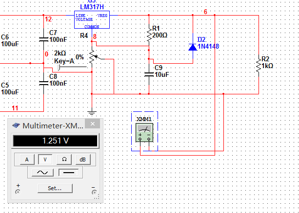

电路与电子技术课程
项目一：直流稳压电源
专业班级：物联网141
学号：2014015024
姓名：陈怡
完成日期： 2016年 4 月 22 日
1. 画出直流稳压电源的方框图，并详细介绍每个框图的功能
2. 仿真和测试结果
2.1 直流稳压电源的整体电路图
2.2 整流滤波电路
仿真：输入输出波形
实验测试：实物图，输入输出波形，要把波形画在坐标系上，标出幅值、周期等参数。
2.3 稳压电路
仿真：输入输出波形
实验测试：实物图，输入输出波形，要把波形画在坐标系上，标出幅值等参数。
2.4 可调电源
仿真：输入输出波形
实验测试：实物图，输入输出波形，要把波形画在坐标系上，标出幅值等参数。测试输出电压的最大最小值。

3. 回答问题
3.1理论上加负载时，滤波电路的输出直流电压Uo和变压器的输出电压U2之间有什么关系：
Uo = Uc = √2 U2
3.2LM7812，LM7912芯片的输入和输出端所接的那三个电容分别起什么作用？
- 防自激
滤波
- 输入端小电容，可以有效滤波。
- 由于稳压电源输出端，为了效果更好的原因，所以通常需要在输出端接上一个滤波电容，起到滤波的作用。
3.3 根据所制作的硬件电路，理论上可调电源的最大最小电压分别为多少？
1.2V - 37V
3.4 可调电源电路中，所接的二级管起什么作用？
稳压二极管串接引脚与地之间，可使输出电压Uo得到一定的提高。
实验实物图
心得体会
实验中重要的是不要把电容反接，还有焊接电路的时候需要认真细心，不要虚焊，很多时候发现电路出现了问题就是因为虚焊造成的。